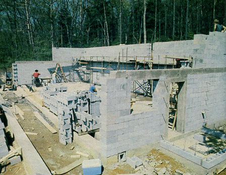
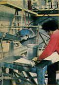
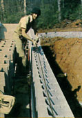
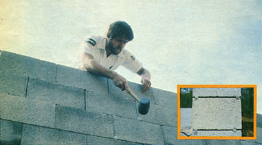
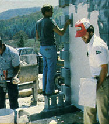
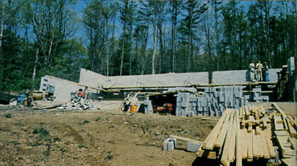
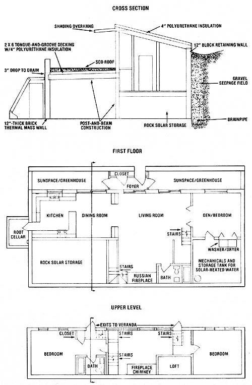

As regular readers of this magazine know, there's been a team of alternative-construction specialists working on a variety of innovative buildings at the magazine's Eco-Village property-and gaining expertise as they do so-for the past few years. Under the direction of Jack Henstridge and Rob Roy, the crew (often with assistance from seminar attendees) built three cordwood structures . .. including the stackwood dome featured in issue 64. Furthermore, two of Bill Coperthwaite's wooden interpretations of the Mongolian yurt now grace the property.
Until recently, however, our team hadn't gotten the opportunity to put their experience to the test by building a full-scale, energy-efficient dwelling. But in the early part of this past April-with the summer's open houses and seminars rolling rapidly toward us-we finally started our earthsheltered house construction project!
In this issue we'll describe the initial phases of the undertaking. And-in order to explore the project in enough detail to benefit those folks who might use our successes (and mistakes!) to get through the building of their own energy-efficient homes-we'll report on the subsequent stages of construction in future issues of MOTHER. Finally, roughly 18 months from now, we hope to be able to conclude the story with an analysis of just how well our attempt at solarl-earth-bermed housing performs through its first year's heating and cooling cycles.
Western North Carolina's topography and climate lend themselves quite well to the earth-sheltering approach. Our area is blessed with an abundance of rolling hills-which provide plenty of sites where a home can be backed into a slope without the need for any particularly difficult excavation-and soils that have little expansive (prone to slippage) clay. Therefore, although drainage needs to be carefully considered, actual earth movement isn't often a problem hereabouts.
The region experiences approximately 4,000 heating degree-days annually, and can encounter seasonal extremes of 10" and 95 °F. A glance over a local monthly temperature profile chart indicates that some source of home heat may be required from September through May, and that cooling would often be pleasant in July and August. However, even during the hottest and coldest times of the year, the temperature will change significantly from day to night.
Consequently, MOTHER's house-planning crew decided that the inclusion of a large amount of thermal mass-along with the added "flywheel" effect of earth berming-would essentially eliminate the need for conventional heating and cooling. And we went on to take a few additional steps to tailor the solar-heated house to our particular climate.
We elected to build the structure on a 6"-thick, 25' X 60' concrete pad that's oriented just 50 to the east of due south. The site has some other excellent qualifications for passive solar heating, too. The open eastern exposure will allow the living area to begin warming soon after sunrise. To the west, however, dense deciduous woods will provide late afternoon shade during the warmer months.
The excavation into the hillside left the rear of the cut 13-1/2 feet below grade. Since that depth is too great for a "to grade" fill on a single-story earth shelter (such a design would have had to support an incredibly thick and heavy layer of earth), we decided to build the back retaining wall to 14 feet and opt for a split-level dwelling. The front half of the house will be only one story and will have a sod-covered roof, while the floor of much of the rear half will be set 63 inches above that of the front.
Therefore, the profile of the back section of the dwelling will protrude above grade, be heavily insulated, and be topped with a "shed" roof. The center section of that rear half, however, will maintain the same floor level as the front of the building . . . and have a cathedral ceiling to provide illumination and to serve as a thermal chimney for summer cooling. Below the floors of the two raised bedrooms, we plan to enclose rock solar storage-which will be fed by ductwork from the peak of the cathedral ceiling-and a holding tank for solar-heated domestic water.
The incorporation of an above-grade second story into our design should provide several other benefits as well. The rear bedrooms will receive direct sun for both lighting and heating, and the upstairs view across the Eco-Village valley-of planted bottomland, a lake, and distant mountains-will be delightful. In addition, the operable windows and the exit to the veranda satisfy most regions' building code requirements for egress from sleeping areas.
With those basic concepts in mind, our design committee began to add detail to the roughed-out plans. A root cellar-with access from the kitchen-was situated outside the main walls . . . requiring a minor addition to the slab. Everyone agreed that the sunspace-greenhouse along the front should be completely glassed, and that a rammedearth floor (treated with linseed oil) in that area would be a good addition to the thermal mass provided by the 12"-thick wall separating the living area from the solarium. Furthermore, for backup heat, we decided to install another massive element: a highefficiency Russian fireplace.
The remainder of the floor plan was left relatively open-with the obvious exception of such spaces as the bathrooms-since our residence is likely to serve as a meeting place for large seminar groups studying earth sheltering and passive solar techniques.
Finally, the innumerable small (but vital)considerations that complete a house-from a gray-water handling system to electrical outlets to washer/dryer placement-were mulled over, and construction was ready to begin.
To counter the combined forces of hydrostatic (water drainage) pressure and earth berming, we opted for a three-way network of redundant wall-reinforcement techniques. The necessary strength was achieved by fitting the courses and cells of 12" retaining-wall block with rebar, filling the cavities with concrete, and then covering the three block walls-inside and out-with a 1/8"-thick layer of Surewall surface-bonding cement. An expansion joint was positioned midway in the rear wall (to prevent cracking), and for waterproofing protection, an area for a drainage pipe and gravel seepage field was planned (to conduct water away from the uphill side of the building).
Before we could begin the wall construction, 3/4" holes had to be bored into the slab, and 36" lengths of 7/8" (No. 7) rebar pounded into the openings. Then a single course of block was laid over the reinforcing rod . . . with mortar beneath to level out the undulations in the concrete pad. From that point on, the wall was dry-stacked (with no mortar between the tiers), and a section of 5/8" rebar was laid horizontally in each groove in the block as we went along.
Now laying a wall without mortar does allow the work to go quite a bit more quickly than would be possible when mortaring each piece, but the method turned out to have a disadvantage as well. Because common block is often uneven by as much as 1/4 inch, irregularities tend to develop as the courses pile up ... and each layer seems to magnify the problems of the one beneath it. [EDITOR'S NOTE: "Trued" block can be acquired in many areas, but it's fairly expensive.] By the time we reached the eight-foot level, there were noticeable bows (or "hogs") in the walls, despite our attempts to level each course as it was laid.
Hence, we decided to pour a lintel to even out the irregularities. Before doing so, though, we dropped two lengths of 5/8" rebar into each cell, built the forms for the root cellar entrance . . . and then poured the cavities, lintel, and door frame at the same time. To be sure that the concrete would penetrate to the bottom of the blocks' interiors, we ordered it mixed thin, and used the rebar to stir the "mud" during filling.
As we were finishing off the last few of the 22 courses required to reach 14 feet, a representative from Bonsal (the company that makes Surewall surface-bonding compound) arrived with some wedges specifically designed to level dry-stacked block. Those plastic implements-the use of which is detailed in the accompanying photos-considerably speeded up the process of truing the wall. Then the remaining cavities were poured and reinforced down to the level of the lintel, and we were ready to apply the Surewall.
We found the material to be similar in many ways to stucco, except that it has fiberglass threads to help add tremendous strength to dry-stacked wall. (Bonsal claims that its product is superior to mortared block walls in withstanding bending, shear, and impact stresses.) One 50-pound bag of Surewall-which must be mixed with 1-1/2 gallons of water-will cover approximately 40 square feet (when spread to a 118" thickness), and the current cost is around $10 per bag. Furthermore, it's available in white, gray, and six pastel colors . . . and thus can serve as a finish coat.
The paste was easy enough to apply with a hawk and trowel, although the representative did recommend wetting the walls lightly on hot days to prevent premature drying. As you can see in the photos, we opted for the white surface-bonding cement, but plan to add a layer of Bonsal's light brown finish coat later to produce a smooth surface.
It's difficult to reach a firm conclusion about the economics of using Surewall. The materials cost does exceed that of a simple mortared masonry wall, but-according to the manufacturer-labor time can be reduced by as much as 30% when the product is used. Thus the price of the components used in each method must be weighed against the time needed to apply them.
We do think, however, that people who decide to build a house similar to ours should at least consider opting for continuous-pour concrete walls. Our calculations indicate that filling the cells and lintels for the 12" block wall used up enough concrete-about 70 cubic yards-to pour an identical length of 8"-thick wall, which would be the structural equivalent of our block bulkheads. If an individual were able to re-use the required forming plywood later in the construction process-for roof decking or flooring, for example-the economics of poured concrete could be quite attractive.
The clay content of our western North Carolina soil-while tricky to work with for drainage-happens to help support a thriving brick industry. Consequently, we decided to build the mass wall at the front of the living area from locally fired high-magnesium brick. (The magnesium darkens the material and improves its thermal properties.) Our custom-ordered batch-it was the first of this type that our local plant had ever produced-cost $114 per 1,000 (compared to standard brick at $85 per 1,000).
We laid up the wall three bricks (12") thick to provide a thermal lag time of between six and eight hours. Of course, the partition was tied into the slab with rebar at the bottom . . . and alternating corner blocks left in the side retaining walls allowed us to key the brick to the rest of the structure.
Since our brick bulkhead needed to be terminated at a height of 7-1/2 feet-to allow space to fit the beams for the sod roof-the use of poured concrete lintels for the tops of the doors and windows proved to be impractical. Instead, we simply welded together two sections of 1/4" X 6" angle iron for each application, bridged the window and door openings, and laid brick directly on top of the metal. At the same time, allowances were made, at the top of the wall, for ducts to transport greenhouse-heated air to the roof peak . . . where it will be picked up and delivered to the rock storage.
In order to supplement the structure's thermal mass, we elected to build wing walls that angle out from the front of the building to hold backfill and to allow for some above-grade earth berming. The wing walls were built the same way as the main retaining walls-adding an inch of styrofoam to separate them thermally from the rest of the structure-but have been left bare for the time being, pending a decision on which covering method to use.
So, as this segment of the story closes, all the exterior walls of our earth shelter are up. In the next issue, we'll discuss the post-and-beam structural elements which must withstand the weight of the sod roof . . . move on to describe the roofing itself . . . and go into more detail about the various waterproofing techniques that we've chosen.
This is a seven-part series of articles. Here are the links to the other six articles.
Part II, Part III, Part IV, Part V, Part VI, Part VII
|
 This view from the southeast shows the location of the root cellar. (The window to the left was later filled in to allow further backfilling.) |
 A masonry saw was used to trim blocks for special fits. |
 A length of five-eighths inch reinforcing rod was placed in the V-grooves of the block as each course was laid. |
|
 A representative of the Bonsal company demonstrates the use of the firm's convenient block-leveling wedges, which can be seen more closely in the inset photo. |
 Surewall surface-bonding cement - a substance similar to stucco but with fiberglass threads that add strength - is applied to the dry-stacked block walls. |
 The location of the future expansion joint is visible in the middle of the rear wall. |
|
 House floor plan |
|
|